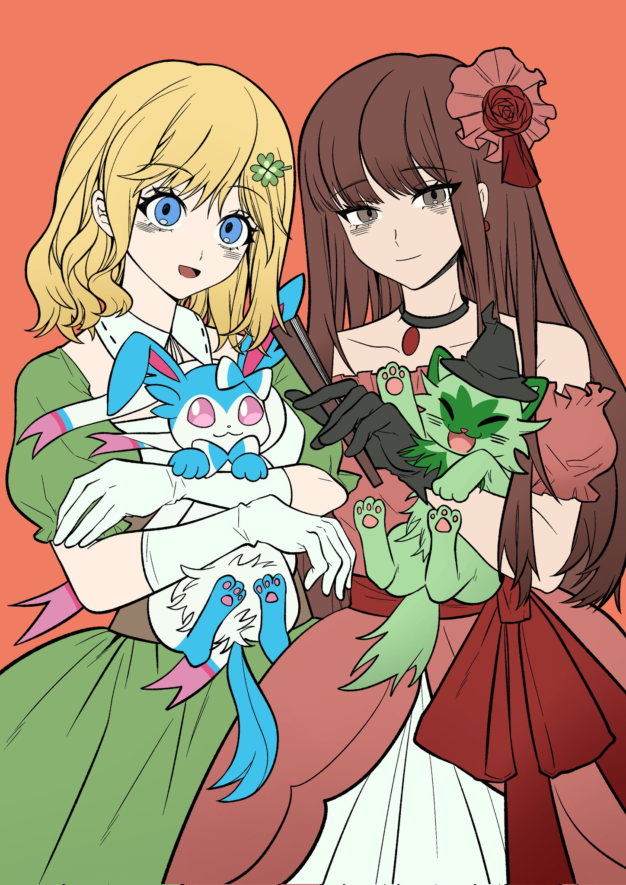
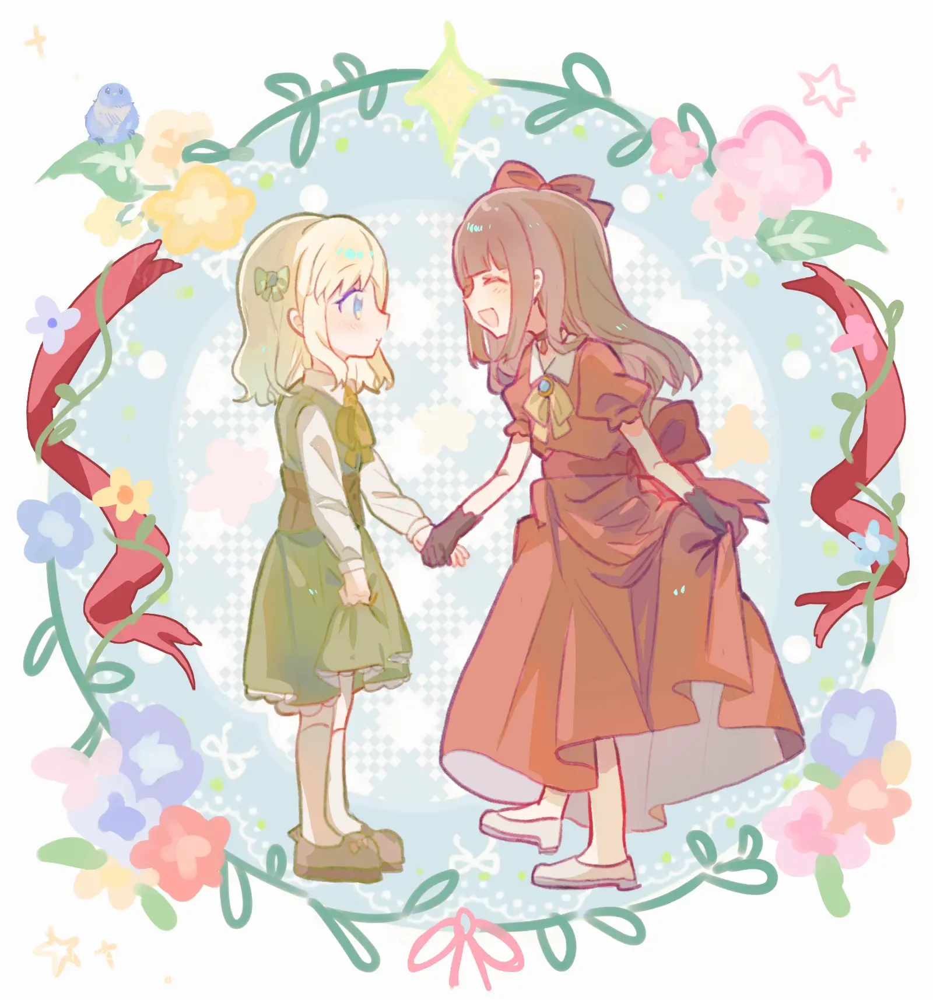
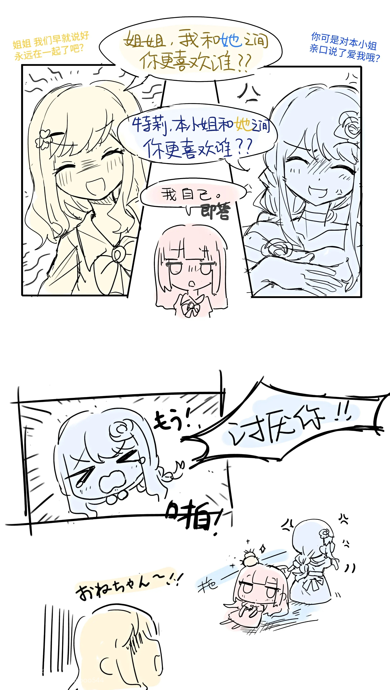
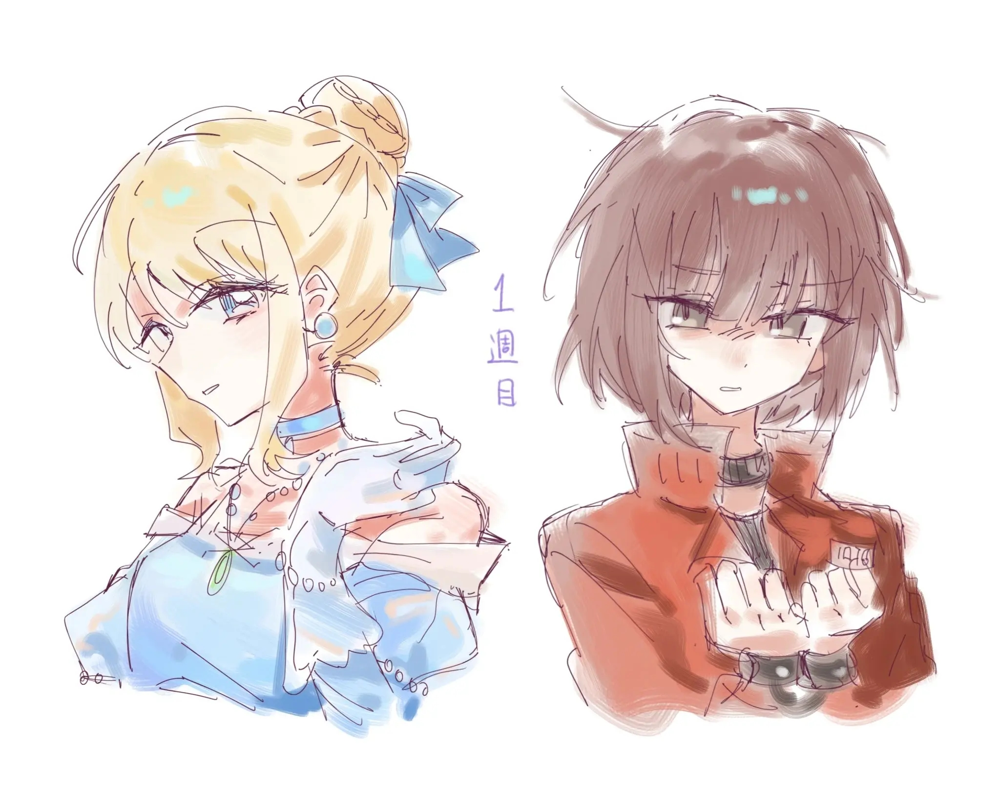
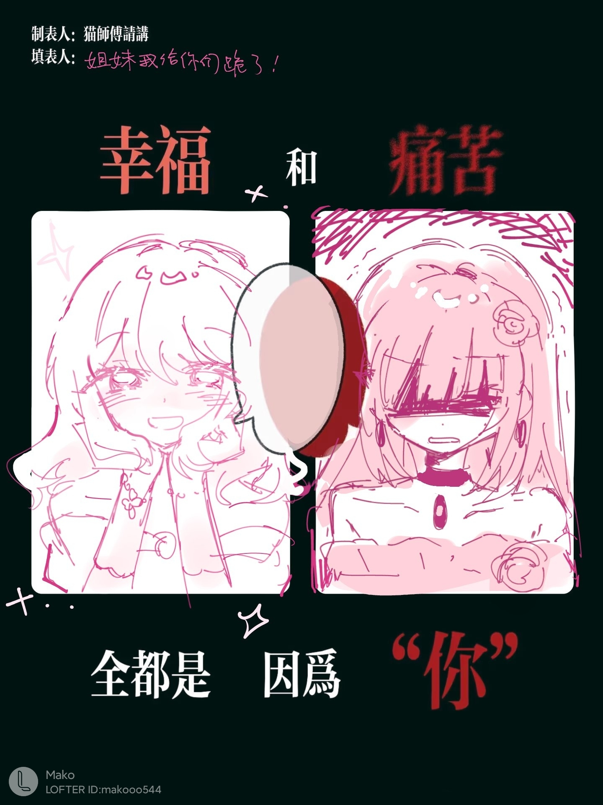
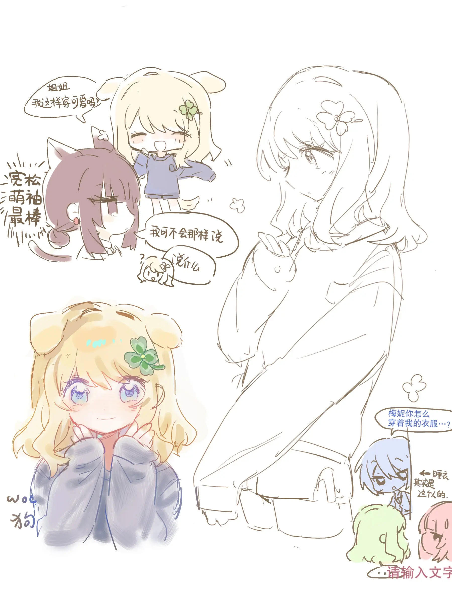

关于おとぎ話の悪役令嬢は罪滅ぼしに忙しい
童话故事的恶役千金为了赎罪奔波忙碌
先贴出这篇文章及翻译的链接：kakuyomu 百合会 机翻小说站
这是一个起源于嫉妒与仇恨的故事，终结于爱与温暖的故事。如果说我的高三下学期是孤悬于浩瀚宇宙的一叶小舟，那么这篇作品显然应该是帮我度过那段时间的抵达现在的桨。
我的阅读记录及文章梗概
我与这部作品的记忆起源于24年12月，由于天气转寒，手指灵活程度下降，我也不得不从bf4这种高烈度的fps游戏中转到文学作品中。这种转变不是突然的，我全心全意的投入百合要等到25年1月了。在这段时间中，我通关了《鱼帆暗涌》的本体结局（epic只送了本体  ）,而大概25年元旦之前的一周，我将ddlc（Doki Doki Literatur Club）真结局打通了（这部分是不是有点啰嗦了）。而大概是元旦那天晚上，我照往常一样打开了百合会（我从25年12月17号启便开始每晚在百合会上寻觅百合小说，那几天我刚看完一部短篇小说），打开了这部超长篇，元旦假期我只看完了大概第二章，当时的我因为发现这部有点过长了之后便暂时搁置了，而再次拣起这部作品时已经是高三下学期开学后的2月23号左右了，几乎同样的原因（我看完了一些百合漫画，暂时没东西看了），我又继续阅读这篇故事了。记得我是在学校看完的第五章《5月16日》，那时候我很震惊于特莉的恐惧发作，因此表现得相当的兴奋。下一个记忆节点是在第六卷《追寻玻璃鞋3》，虽然早就得知基德并不是真正的王子（其实是克蕾雅公主），但当克蕾雅娓娓道出自己的背景时，当特莉第一次找到真爱时（后来看完第九章才发现我还是更喜欢梅尼×特莉，而且其实特莉爱上克蕾雅就是一见钟情，其实挺站不住脚的）我第一次有如此舒畅的感觉。第一章讲述了特莉回到过去时对宅邸中各种人物打理好关系的故事，特莉的专属女仆莎莉亚，以及后面极其重要的第二位主人公基德（其实是克蕾雅）初次登场。第二章是由克罗雪老师之死引入的（虽然在这个崭新的时间线中，克罗雪老师躲避了死亡的命运），也是引出了基德身份的特殊，最后也是埋下小露比的哥哥这个惊天伏笔。第三章讲述了特莉的最好的朋友————尼克斯的悲剧（在这个时间线中同样避免了死亡的命运）。第四章中，被贵族欺骗的少女苏菲亚是一位命运多舛的商人之女，其家庭因被贵族欺骗而崩溃，父母也撒手人寰。在这样的背景下，苏菲亚选择了与贵族斗争，她化身为怪盗帕斯特利尔，从品行恶劣的贵族手中盗走了财宝并分发给穷人。也是这一章，特莉遇到了她的真命天子，并失去了初吻（真正的初吻对象是梅尼，但为什么最后不是选梅尼啊呜呜呜，我要看骨科，虽然番外里面骨科给我吃爽了）。第五卷是一个超长的以月为单位的故事，这里特莉看清了自己前世初恋的对象第二王子里昂并不是如自己幻想般美好的人，同时里昂也知道到了关于前世的记忆。第六章讲述了
）,而大概25年元旦之前的一周，我将ddlc（Doki Doki Literatur Club）真结局打通了（这部分是不是有点啰嗦了）。而大概是元旦那天晚上，我照往常一样打开了百合会（我从25年12月17号启便开始每晚在百合会上寻觅百合小说，那几天我刚看完一部短篇小说），打开了这部超长篇，元旦假期我只看完了大概第二章，当时的我因为发现这部有点过长了之后便暂时搁置了，而再次拣起这部作品时已经是高三下学期开学后的2月23号左右了，几乎同样的原因（我看完了一些百合漫画，暂时没东西看了），我又继续阅读这篇故事了。记得我是在学校看完的第五章《5月16日》，那时候我很震惊于特莉的恐惧发作，因此表现得相当的兴奋。下一个记忆节点是在第六卷《追寻玻璃鞋3》，虽然早就得知基德并不是真正的王子（其实是克蕾雅公主），但当克蕾雅娓娓道出自己的背景时，当特莉第一次找到真爱时（后来看完第九章才发现我还是更喜欢梅尼×特莉，而且其实特莉爱上克蕾雅就是一见钟情，其实挺站不住脚的）我第一次有如此舒畅的感觉。第一章讲述了特莉回到过去时对宅邸中各种人物打理好关系的故事，特莉的专属女仆莎莉亚，以及后面极其重要的第二位主人公基德（其实是克蕾雅）初次登场。第二章是由克罗雪老师之死引入的（虽然在这个崭新的时间线中，克罗雪老师躲避了死亡的命运），也是引出了基德身份的特殊，最后也是埋下小露比的哥哥这个惊天伏笔。第三章讲述了特莉的最好的朋友————尼克斯的悲剧（在这个时间线中同样避免了死亡的命运）。第四章中，被贵族欺骗的少女苏菲亚是一位命运多舛的商人之女，其家庭因被贵族欺骗而崩溃，父母也撒手人寰。在这样的背景下，苏菲亚选择了与贵族斗争，她化身为怪盗帕斯特利尔，从品行恶劣的贵族手中盗走了财宝并分发给穷人。也是这一章，特莉遇到了她的真命天子，并失去了初吻（真正的初吻对象是梅尼，但为什么最后不是选梅尼啊呜呜呜，我要看骨科，虽然番外里面骨科给我吃爽了）。第五卷是一个超长的以月为单位的故事，这里特莉看清了自己前世初恋的对象第二王子里昂并不是如自己幻想般美好的人，同时里昂也知道到了关于前世的记忆。第六章讲述了
依稀记得我是在一个周日或是周六晚亦或是（其实就是高中生的周末啦）我看完了第七卷，当时的我对这卷交代世界背景的章节并不太感冒（我说特莉还是太有魅力了）。第八卷是船上回，在这一卷的最后，特莉终于向克蕾雅坦白自己对梅尼的真实感情（就是厌恶，仇恨）。毫无意外的，克蕾雅接受了特莉的那并不完美的部分（其实对比克蕾雅和梅尼，特显然是相当的不起眼，平庸的，克蕾雅被特莉打动的点在于特莉注意到了不能抛头露面，不能正大光面出现在公众眼中，不能名正言顺的继承王位，而就在克雷雅心灰意冷时，特莉与人群中发现了她，并对她一见钟情），这也是真正让我意识到特莉一直以来为了掩饰自己罪行的努力，是除去恋情外在剧情上让我第一次如此感动的一篇。第九章可以说是相当特别的一章，特莉基本在全章保持了失忆，同时对上一世的闪回也频繁出现在这一章中。总的来说，第九章补全了特莉至此的身世（特莉在前世度过了相当悲惨的生活，童年被姐姐抢夺人偶，青春时既要偷偷的保护被母亲和姐姐欺凌的梅尼，还要忍受对梅尼的嫉妒。虽然特莉也做出不少欺凌梅尼的行为，但同时她也在用自己的方式保护着梅尼不会遭受太过分的欺凌，梅尼也因此爱上了特莉），也揭开了梅尼对特莉真实的情感（病娇的爱），第九章的《说书人是你》《手绘故事书》《修罗场》等也算是神回了，可以说成功的使特莉形象更加立体。第十章是学院回，这一章埋下了一个好玩的伏笔，卡塔莉公主的活泼与执着，探索旧校舍（就是城堡啦）时的遭遇也十分扣人心弦，最后奥兹的登场，桃乐丝的死亡令我无比的悲伤。第十一章是一个伏笔回收章，从第二章就理应死去的小露比的哥哥雷特第一次登场（以雷特之名而不是化名雷克斯），协助特莉向12位魔法师拿回了魔法，有了迎战奥兹的资本。第十二章，众人帮助奥兹实现了她的愿望，终于不用被困于这个世界的奥兹回到她的故土，最后是特莉与克蕾雅的婚礼，结局终于被改写，特莉终于获得了还算是幸福的人生。






图片来源：@A25TIf6OV60hdqJ @omaok71 @ylinjing291012
搜索tag：#おとぎ話の悪役令嬢は罪滅ぼしに忙しい
2026.3.18